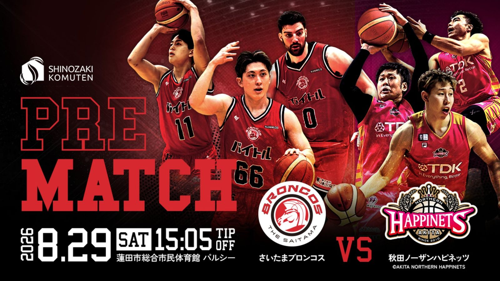

パルシーに、開幕前哨戦の熱が満ちる —— さいたまブロンコス、秋田ノーザンハピネッツ 迎えるプレシーズンマッチを8月29日開催
さいたまブロンコスは8月29日（土）15時05分、蓮田市総合市民体育館パルシーでB.PREMIERの秋田ノーザンハピネッツを迎え、「篠崎工務店presentsプレシーズンマッチ」を開催する。運営会社の株式会社ブロンコス20が8月26日、公式発表した。

試合概要
会場は埼玉県蓮田市の蓮田市総合市民体育館パルシー。特別協賛（冠パートナー）は有限会社篠﨑工務店が務める。最寄りはJR蓮田駅東口で、東口3番バス乗場（朝日バス）からパルシー・ハストピア行きに乗り終点で下車する。駐車場は台数に限りがあるため、主催者は公共交通機関での来場を呼びかけている。
試合前を彩るオープニングイベント
試合前には豪華ゲストによるオープニングイベントが組まれている。ラッパーのRed Eyeがこの日限定のスペシャルライブを行うほか、6人組ヴォーカル・コレクティブのENBASEも出演。さらにD.LEAGUEで活動するプロダンスチーム「dip BATTLES」がオープニングセレモニーとハーフタイムでパフォーマンスを披露し、Red Eyeとのサイファーも予定されている。今回結成が発表された新パフォーマンスチーム「dip QueenZ」もこの試合でお披露目される。
チケットは新システムへ移行
本試合に限り、ファンクラブ会員向けの「プレシーズンマッチ限定価格」が設定される。2026-27シーズンからチケット販売はBリーグ統一システム「Bリーグチケット」に切り替わっており、購入には新B.LEAGUEアカウントへの事前登録が必要になるという。
出典: 株式会社ブロンコス20プレスリリース「【試合情報】8/29（土）プレシーズンマッチ vs秋田ノーザンハピネッツ 開催のお知らせ」（PR TIMES・2026年8月26日）
https://prtimes.jp/main/html/rd/p/000000103.000128079.html